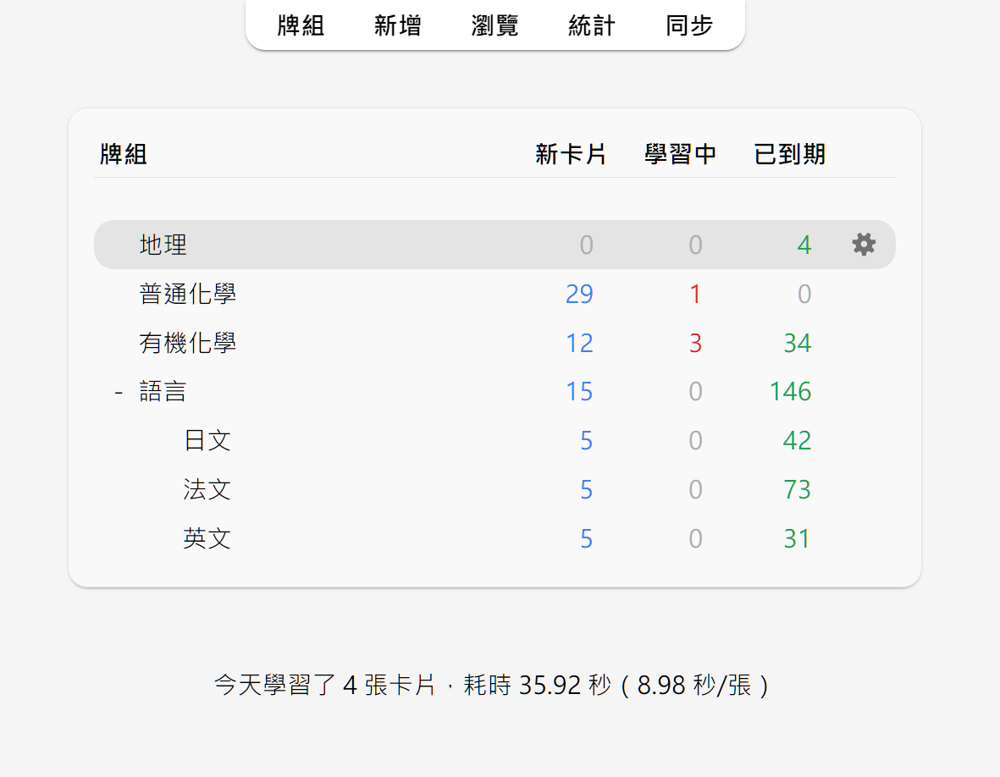

學習 Studying（英文）
- 牌組 Decks
- 學習概覽 Study Overview
- 問題面 Questions
- 回答按鈕 Answer Buttons
- 模糊乘數 Fuzz Factor
- 「編輯」與「更多」 Editing and More
- 顯示順序 Display Order
- 關聯卡片與推遲 Siblings and Burying
- 快速鍵 Keyboard Shortcuts
- 進度落後 Falling Behind
加入牌組或筆記後，方可開始學習。
牌組 Decks
開始學習時，Anki 只會從所選牌組及其子牌組中「收集」（抽取）卡片。
牌組畫面中是你的牌組及當天需要學習的「新卡片」、「學習中」和「已到期（待複習）」的卡片數量。

你可以按一下牌組來前往學習畫面，按一下主視窗上方的「牌組」按鈕來回到牌組清單。（要使用鍵盤切換，請使用選單中的「學習牌組…」動作，或按下 S 鍵來開始學習所選牌組）
按一下牌組右邊的設定按鈕可以更改牌組選項，重新命名、刪除或匯出牌組。
學習概覽 Study Overview
按一下要學習的牌組後，打開的「牌組概覽」畫面上會顯示今天需要學習的卡片數量：

卡片分為三種狀態：新卡片、學習中和待複習。在牌組選項中啟用「推遲關聯的 ... 卡片」後，還可以看到將被推遲的卡片數量，以灰色數字顯示：

按一下「開始學習」按鈕將顯示當天應學的所有卡片。
在學習中，可以在鍵盤上按下 S 鍵以返回概覽畫面。
問題面 Questions
顯示卡片問題面、思考、答題過後，你可以按一下「顯示答案」按鈕或按下 空白 鍵來顯示答案面。答題無須限時，但建議將答題時間保持在 10 秒內，超時則直接放棄作答並檢查答案，不要埋頭苦想。
回答按鈕 Answer Buttons
顯示答案後，請對比你的回答和正確答案，然後在以下按鈕中選擇一個。
-
重來：表示答錯或完全想不出答案。部分答對時也仍應選擇此按鈕——如果答案在考試時會被判為錯誤，那麼請在 Anki 中也視為錯誤。此按鈕的使用頻率通常應為 5–20%。
鍵盤快速鍵：1
-
困難：表示答對，但作答時猶豫不決或耗時過長。
鍵盤快速鍵：2
-
良好：表示答對，但需要些許思考才能想出答案。恰當使用 Anki 時，此按鈕應為最常使用的按鈕，使用頻率通常應為 80–95%。
鍵盤快速鍵：3、空白、Enter
-
簡單：表示答對，且作答時不假思索。
鍵盤快速鍵：4
若難以在四個按鈕中做出選擇，你可以只用兩個按鈕：答錯按「重來」，答對按「良好」。
選擇按鈕後，卡片將在所選按鈕上顯示的時長過後再次出現。若要進一步了解複習間隔設定，請參閱《牌組選項》中的〈學習階段〉、〈遺忘〉、〈FSRS〉及〈進階〉各章節。
模糊乘數 Fuzz Factor
選擇回答按鈕的同時，Anki 會為複習卡隨機套用一個模糊乘數，從而使每張卡片稍微錯開。這樣，若你在相同時間為兩張卡片按下相同按鈕，這兩張卡片在未來就不會一直同時出現。
學習中的卡片也會被賦予最長 5 分鐘的額外延遲，以避免出現順序相同，但這一延遲不會體現在回答按鈕上。此功能無法被停用。
「編輯」與「更多」 Editing and More
你可以按一下左下方的「編輯」按鈕來編輯當前筆記。編輯結束後可繼續學習。編輯畫面與新增筆記畫面非常相似。
右下方的「更多」按鈕提供了更多可為當前卡片或筆記執行的動作。
-
為卡片加上旗標：為卡片加上或移除一個以顏色區分的標記。旗標會在學習時顯示，在瀏覽器中也可以搜尋加上了旗標的卡片。現在在忙，想晚點再詳細查詢一個單字？你可以先給它加上旗標。在 Anki 2.1.45+ 版本中，你還可以在瀏覽器中重新命名旗標。
-
推遲卡片/筆記：停止複習一張卡片或一則筆記中的所有卡片，第二天再複習。（若要提前取消推遲，可以在學習概覽畫面按一下「取消推遲」按鈕）。若你當下無法回答某些卡片，或想改時間再學習，則可以使用這個動作。推遲也可以自動套用到同一則筆記的卡片。
-
重置卡片：移動當前卡片到新卡片佇列末尾。
在 Anki 2.1.50+ 版本中，使用 v3 排程器第一次學習新卡片時，Anki 會記住卡片的原始順序。在遺忘卡片時可使用「回復原始順序」選項來回復卡片到原始順序。
如果啟用了「重設重複和遺忘次數」選項，卡片的複習和失敗次數將被重設為零。卡片資訊底部的複習歷史記錄不會被移除。
-
設定到期日：將卡片加入複習佇列，並使其在指定日期到期。
-
擱置卡片/筆記：停止複習一張卡片或一則筆記中的所有卡片，直到手動取消擱置（透過瀏覽器中的擱置按鈕）。若你在短期內都不想要複習一則筆記，但又不想刪除，則可以使用此動作。使用舊版排程器時，若卡片在學習時就被擱置，卡片會回到擱置前原來的新卡片或複習佇列。
使用 2.1 排程器時，擱置卡片不會重置其學習階段。
-
選項：編輯當前牌組的選項。
-
卡片資訊：顯示卡片的統計資料資訊。
-
上一張卡片資訊：顯示上一張卡片的統計資料資訊。
-
標記筆記：為當前筆記加入「marked」標籤，以便在瀏覽器中尋找。類似為卡片加上旗標，但透過標籤實現，若一則筆記有多張卡片，則這些卡片全都會帶有「marked」標籤。建議大多數使用者使用旗標。
-
建立複本：開啟編輯器，重複當前筆記的內容，你可以稍作修改來建立圍繞同一主題的不同卡片。根據預設，複本會與原筆記放入同一牌組。
-
刪除筆記：刪除筆記及其所有卡片。
-
重播音訊：若卡片正面或背面有音訊，重新播放。
-
暫停音訊：若音訊正在播放，暫停播放。
-
音訊倒轉 5 秒/快轉 5 秒：倒轉/快轉正在播放的音訊 5 秒。
-
錄音：使用你的麥克風錄音來檢查你的發音。一旦前進到下一張卡片，錄音就會被刪除。若要將音訊永久加入卡片，請編輯筆記。
-
重播錄音：重新播放你的上一個錄音（如顯示答案後）。
顯示順序 Display Order
學習時，顯示的卡片會從你選取的牌組及其子牌組中抽取。因此，若選取學習牌組「日文」，則子牌組「日文::單字」和「日文::課本::第一課」中的卡片也會一併顯示。
根據預設，Anki 收集（抽取）新卡片依牌組名稱的字母順序收集。如果你選取學習牌組「French」，包括子牌組「French::Vocab」和「French::My Textbook::Lesson 1」，那麼卡片收集順序將為「French」→「My Textbook」→「Vocab」。你可以利用這個特性來控制卡片出現的順序，把優先級高的卡片放入在清單中靠上的牌組。依字母順序排序時，「-」會出現在字母前，「~」會出現在字母後。因此，若要讓「Vocab」排在最前面，你可以把它重新命名為「-Vocab」；要讓「My Textbook」排在最後則可以把它重新命名為「~My Textbook」。
Anki 會分開收集新卡片和複習卡，分成兩佇列。所以若你學完了 A 牌組的新卡片但未學完複習卡，A 牌組的複習卡和 B 牌組的新卡片可能會同時出現。若要避免此情況，你可以直接選取要單獨學習的子牌組，而不是其父牌組。
由於學習中的卡片需要儘早完成，Anki 會同時從所有牌組中收集這些卡片，並依到期順序顯示。
要了解如何控制卡片顯示順序，請參閱《牌組選項》中的〈顯示順序〉章節。要對新卡片的順序微調，請在瀏覽器中進行調整。
關聯卡片與推遲 Siblings and Burying
還記得 Anki 可以為你輸入的單項內容建立多張卡片嗎？例如同時建立一張「正面→背面」和一張「背面→正面」卡片，或是一段文字中建立兩個克漏字空格並產生兩張卡片。像這樣的一組卡片叫做「關聯卡片」。
當你回答的卡片存在關聯卡片時，Anki 可以自動「推遲」這些卡片，防止關聯卡片在同一次學習中一起出現。被推遲的卡片次日才會出現；你也可以按一下牌組概覽畫面下方的「取消推遲」按鈕來手動取消推遲。關聯卡片牌組不同時（例如使用「覆蓋牌組」功能時）也仍會被推遲。
你可以在牌組選項畫面中開啟推遲選項，可對新卡片和複習卡分別進行設定。
Anki 僅會推遲關聯的新卡片或複習卡。學習中的卡片（未學完的新卡片）應儘早完成學習，因此不會被推遲；但反過來，回答學習中的卡片後，關聯的新卡片或複習卡仍會被推遲。
卡片無法同時被推遲和擱置。擱置卡片時，已推遲的卡片將被取消推遲。已擱置的卡片無法被推遲。
快速鍵 Keyboard Shortcuts
Anki 中大多數的常用動作都可以使用快速鍵來操作。其中大多可在介面中找到：選單項目旁邊標有快速鍵，滑鼠遊標懸停在按鈕上時通常會顯示快速鍵提示。
學習時，按下 空白 鍵或 Enter 鍵會顯示答案。顯示答案面時，按下 空白 鍵或 Enter 鍵會選取「良好」按鈕。使用數字鍵 1 至 4 可以選取各難度按鈕。常用的方法是用一根手指按 空白 鍵來回答大多數卡片，另一根手指放在 1 鍵上以便遺忘時選取「重來」。
要使用鍵盤來快速切換牌組，你可以使用 / 鍵來選取「工具」選單中的「學習牌組」項目。打開的視窗中會顯示你的所有牌組。你可以在上方的篩選器中輸入文字來篩選牌組。要搜尋多個字詞，請在字詞間加入空格，Anki 會顯示符合所有字詞的牌組。搜尋「日 單」或「字 日」都會符合名為「日文::單字」的牌組。
進度落後 Falling Behind
當你的複習進度落後時，根據預設，Anki 會優先顯示最早到期的卡片。這樣可以確保沒有卡片會被遺漏，遲遲複習不到。但如果你新學習了新卡片，學習中的卡片在學完積壓的複習卡之前都不會出現。
如果回答卡片時與上一次複習時的間隔過久，這一時長會幫 Anki 決定卡片下一次出現的時機。所以，當你有一段時間沒用 Anki 後，重新開始時只需正常繼續學習，無需從頭開始。